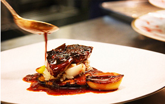

唯一無二のダイニング体験を『ラベ』でお楽しみください。
そして居心地の良い空間が広がる『ラベ』は、
シェフたちの活気あふれる姿を映すオープンキッチン、
世界の味覚が集結する「フランス」をテーマに、
ジャンルを超えた独創的な料理を提供するレストランです。
神戸でも有数のフランスワインのセレクションを誇る
ワインセラーは常時約100種類、1,600本以上を揃えています。
コース料理はもちろん、多彩なアラカルトメニューまで、
上質なワインとともに心ゆくまでご堪能いただけます。
＜季節のお料理＞
・料理名：コートレットピジョン スタイル‘ロマノフ’
・料理の説明
ピジョン（鳩）の胸肉とフォアグラ、黒トリュフを網脂で包んで焼き上げたキュイエールを代表するスペシャル料理。
高級食材を贅沢に使っているところから、豪華絢爛の代表格ともいえるロマノフ王朝に由来して命名されました。
・注意
メニューは一例です。食材や盛り付けが変わる場合がございます。
＜コース料理＞
●ランチコース
・注意：コース内容はその日最高の食材を使用するため、変更になることがございます。

■コース名①：Le Menu Francais
￥4,200（税込・サービス料15％別）
・アミューズ・ブーシュ
・フォアグラとアーティーチョークのジュレ隠元豆のサラダと共に
・サーモンスフレ オーベルジュドリル風
・プレデセール
・アリババとオレンジ グランマルニエ風味
・カフェ
・小菓子
■コース名②：Le Menu ｄAlsace
￥5,200（税込・サービス料15％別）
・アミューズ・ブーシュ
・ホワイトアスパラガスとポーチドエッグソース・モリーユ
・いろいろな部位を使った豚の一皿＜スタイルシュウクルート＞
・プレデセール
・マンゴープリンとペパーミントのエミュルション
ココナッツのメレンゲを添えて
・カフェ
・小菓子
＜コース料理＞
●ディナーコース
・注意：コース内容はその日最高の食材を使用するため、変更になることがございます。

■コース名①：Le Menu des Vosges
￥8,400（税込・サービス料15％別）
・アミューズ・ブーシュ
・ホワイトアスパラガスとポーチドエッグ ソース・モリーユ
・天然イトヨリのポワレ ソース・フヌイユ
イベリコチョリソーのモロッコ風パエリア
・いろいろな部位を使った豚の一皿＜スタイルシュウクルート＞
・プレデセール
・マンゴープリンとペパーミントのエミュルション
ココナッツのメレンゲを添えて
・カフェ
・小菓子

■コース名②：Le Menu ｄ‘Illhaeusern
￥12,600（税込・サービス料15％別）
・アミューズ・ブーシュ
・ラングスティーヌのデュオとカサゴのルーロー
蛤のムースと共に
・天然鱸のポワレ スペルト小麦と根セロリと青林檎のラグー
穴子の燻製のエミュルッション
・仔羊の鞍下肉とブレッツェルのクルート
ジャガイモのクルスティヤン、空豆と肩肉の煮込み添え
・プレデセール
・スパイスの香るモワルショコラ
ブラッドオレンジのソルベと季節の果実のブロシェット
・カフェ
・小菓子
＜ワイン＞
世界最優秀ソムリエのタイトルに輝いたセルジュ・デュプス氏は、長きにわたり本場フランスでシェフソムリエとして活躍。
そのデュプス氏による全面監修のもと、選りすぐりの品々を集めたワインリストをご用意しております。
『ラベ』では、飲み頃を迎えたワイン600種類・2,000本を常に保存。なかでも、
エレガントな薫りとバランスのとれた味わいで、その切れ味の良さにも定評がありおすすめです。
お料理と合わせてお楽しみ下さい。